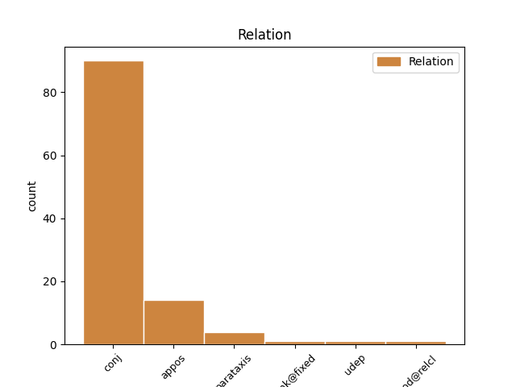
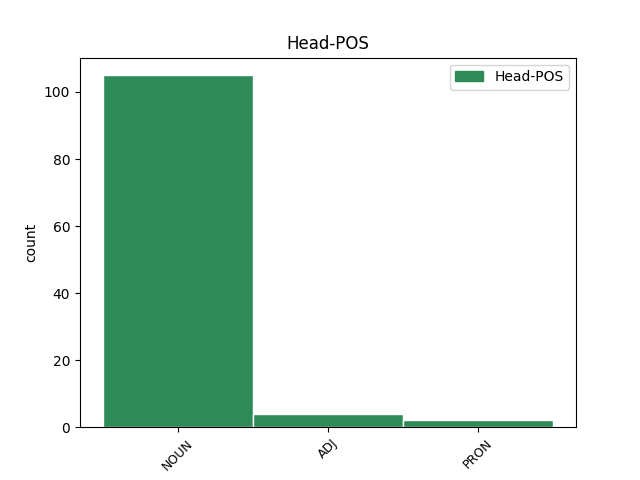
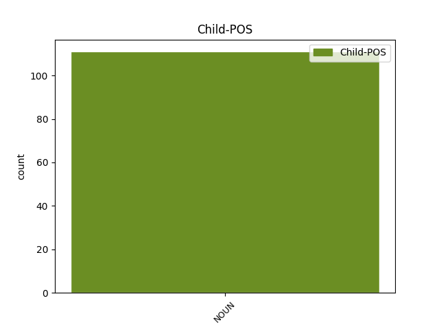

Distribution of features within this leaf



Agreement Rules sorted by frequency.
- When the dependent token is the conjunct(conj) of the head token, and the head token is NOUN and the dependent token is NOUN.
1 Esu _ _ _ _ 0 _ _ _
2 ne _ _ _ _ 0 _ _ _
3 kartą _ _ _ _ 0 _ _ _
4 kalbėjęs _ _ _ _ 0 _ _ _
5 apie _ _ _ _ 0 _ _ _
6 pavojingą _ _ _ _ 0 _ _ _
7 „ _ _ _ _ 0 _ _ _
8 lietuviškąją _ _ _ _ 0 _ _ _
9 triadą _ _ _ _ 0 _ _ _
10 “ _ _ _ _ 0 _ _ _
11 ( _ _ _ _ 0 _ _ _
12 sakyčiau _ _ _ _ 0 _ _ _
13 , _ _ _ _ 0 _ _ _
14 lietuviškąjį _ _ _ _ 0 _ _ _
15 Bermudų _ _ _ _ 0 _ _ _
16 trikampį _ _ _ _ 0 _ _ _
17 ) _ _ _ _ 0 _ _ _
18 – _ _ _ _ 0 _ _ _
19 nesutarimus _ _ _ _ 0 _ _ _
20 su _ _ _ _ 0 _ _ _
21 rusais _ _ _ _ 0 _ _ _
22 , _ _ _ _ 0 _ _ _
23 lenkais lenkas NOUN NN Case=Ins|Gender=Masc|Number=Plur 0 _ _ _
24 ir _ _ _ _ 0 _ _ _
25 žydais žydas NOUN NN Case=Ins|Gender=Masc|Number=Plur 23 conj _ En=Jews|SpaceAfter=No
26 , _ _ _ _ 0 _ _ _
27 arba _ _ _ _ 0 _ _ _
28 su _ _ _ _ 0 _ _ _
29 Rusija _ _ _ _ 0 _ _ _
30 , _ _ _ _ 0 _ _ _
31 Lenkija _ _ _ _ 0 _ _ _
32 ir _ _ _ _ 0 _ _ _
33 Izraeliu _ _ _ _ 0 _ _ _
34 . _ _ _ _ 0 _ _ _
1 Šį _ _ _ _ 0 _ _ _
2 bei _ _ _ _ 0 _ _ _
3 tą _ _ _ _ 0 _ _ _
4 būtų _ _ _ _ 0 _ _ _
5 galima _ _ _ _ 0 _ _ _
6 pasakyti _ _ _ _ 0 _ _ _
7 ir _ _ _ _ 0 _ _ _
8 apie _ _ _ _ 0 _ _ _
9 brolius brolis NOUN NN Case=Acc|Gender=Masc|Number=Plur 0 _ _ _
10 pabaltiečius pabaltietis NOUN NN Case=Acc|Gender=Masc|Number=Plur 9 appos _ En=Baltic|SpaceAfter=No
11 . _ _ _ _ 0 _ _ _
1 Esu _ _ _ _ 0 _ _ _
2 skaitęs _ _ _ _ 0 _ _ _
3 – _ _ _ _ 0 _ _ _
4 tiesa tiesa NOUN NN Case=Nom|Gender=Fem|Number=Sing 8 parataxis _ En=truth|SpaceAfter=No
5 , _ _ _ _ 0 _ _ _
6 ne _ _ _ _ 0 _ _ _
7 lietuvių _ _ _ _ 0 _ _ _
8 spaudoje spauda NOUN NN Case=Loc|Gender=Fem|Number=Sing 0 _ _ _
9 , _ _ _ _ 0 _ _ _
10 - _ _ _ _ 0 _ _ _
11 interviu _ _ _ _ 0 _ _ _
12 su _ _ _ _ 0 _ _ _
13 mergina _ _ _ _ 0 _ _ _
14 iš _ _ _ _ 0 _ _ _
15 Europos _ _ _ _ 0 _ _ _
16 , _ _ _ _ 0 _ _ _
17 kuri _ _ _ _ 0 _ _ _
18 atsako _ _ _ _ 0 _ _ _
19 į _ _ _ _ 0 _ _ _
20 klausimą _ _ _ _ 0 _ _ _
21 , _ _ _ _ 0 _ _ _
22 kuo _ _ _ _ 0 _ _ _
23 skiriasi _ _ _ _ 0 _ _ _
24 Rytų _ _ _ _ 0 _ _ _
25 Europos _ _ _ _ 0 _ _ _
26 politinė _ _ _ _ 0 _ _ _
27 scena _ _ _ _ 0 _ _ _
28 nuo _ _ _ _ 0 _ _ _
29 Vakarų _ _ _ _ 0 _ _ _
30 politinės _ _ _ _ 0 _ _ _
31 scenos _ _ _ _ 0 _ _ _
32 . _ _ _ _ 0 _ _ _
1 Literatūriniu _ _ _ _ 0 _ _ _
2 požiūriu požiūris NOUN NN Case=Ins|Gender=Masc|Number=Sing 7 udep _ En=viewpoint
3 tai _ _ _ _ 0 _ _ _
4 bene _ _ _ _ 0 _ _ _
5 geriausias _ _ _ _ 0 _ _ _
6 Aristofano _ _ _ _ 0 _ _ _
7 veikalas veikalas NOUN NN Case=Nom|Gender=Masc|Number=Sing 0 _ _ _
8 – _ _ _ _ 0 _ _ _
9 su _ _ _ _ 0 _ _ _
10 puikiais _ _ _ _ 0 _ _ _
11 poetiškais _ _ _ _ 0 _ _ _
12 chorais _ _ _ _ 0 _ _ _
13 , _ _ _ _ 0 _ _ _
14 be _ _ _ _ 0 _ _ _
15 to _ _ _ _ 0 _ _ _
16 , _ _ _ _ 0 _ _ _
17 nemeluotai _ _ _ _ 0 _ _ _
18 juokingas _ _ _ _ 0 _ _ _
19 . _ _ _ _ 0 _ _ _
1 Tačiau _ _ _ _ 0 _ _ _
2 nesutinku _ _ _ _ 0 _ _ _
3 , _ _ _ _ 0 _ _ _
4 kad _ _ _ _ 0 _ _ _
5 dera _ _ _ _ 0 _ _ _
6 mylėti _ _ _ _ 0 _ _ _
7 tik _ _ _ _ 0 _ _ _
8 tokią _ _ _ _ 0 _ _ _
9 tėvynę _ _ _ _ 0 _ _ _
10 , _ _ _ _ 0 _ _ _
11 tautą _ _ _ _ 0 _ _ _
12 ir _ _ _ _ 0 _ _ _
13 lietuvybę _ _ _ _ 0 _ _ _
14 , _ _ _ _ 0 _ _ _
15 kokias _ _ _ _ 0 _ _ _
16 įsivaizduoja _ _ _ _ 0 _ _ _
17 daugelis _ _ _ _ 0 _ _ _
18 mūsų _ _ _ _ 0 _ _ _
19 filosofų _ _ _ _ 0 _ _ _
20 ir _ _ _ _ 0 _ _ _
21 nefilosofų _ _ _ _ 0 _ _ _
22 – _ _ _ _ 0 _ _ _
23 atseit _ _ _ _ 0 _ _ _
24 , _ _ _ _ 0 _ _ _
25 mylėti _ _ _ _ 0 _ _ _
26 ir _ _ _ _ 0 _ _ _
27 baigta _ _ _ _ 0 _ _ _
28 , _ _ _ _ 0 _ _ _
29 jokiu joks PRON DT Case=Ins|Gender=Masc|Number=Sing 0 _ _ _
30 būdu būdas NOUN NN Case=Ins|Gender=Masc|Number=Sing 29 unk@fixed _ En=way
31 jų _ _ _ _ 0 _ _ _
32 nereflektuoti _ _ _ _ 0 _ _ _
33 . _ _ _ _ 0 _ _ _
1 Beje _ _ _ _ 0 _ _ _
2 , _ _ _ _ 0 _ _ _
3 ateityje _ _ _ _ 0 _ _ _
4 ( _ _ _ _ 0 _ _ _
5 tiesa tiesa NOUN NN Case=Nom|Gender=Fem|Number=Sing 8 parataxis _ En=truth|SpaceAfter=No
6 , _ _ _ _ 0 _ _ _
7 gana _ _ _ _ 0 _ _ _
8 tolimoje tolimas ADJ JJL Case=Loc|Definite=Ind|Degree=Pos|Gender=Fem|Number=Sing 0 _ _ _
9 ) _ _ _ _ 0 _ _ _
10 nepriklausomas _ _ _ _ 0 _ _ _
11 valstybes _ _ _ _ 0 _ _ _
12 iš _ _ _ _ 0 _ _ _
13 viso _ _ _ _ 0 _ _ _
14 galbūt _ _ _ _ 0 _ _ _
15 pavaduos _ _ _ _ 0 _ _ _
16 globalinė _ _ _ _ 0 _ _ _
17 sąjungą _ _ _ _ 0 _ _ _
18 , _ _ _ _ 0 _ _ _
19 kurios _ _ _ _ 0 _ _ _
20 bruožai _ _ _ _ 0 _ _ _
21 pastebimi _ _ _ _ 0 _ _ _
22 ir _ _ _ _ 0 _ _ _
23 dabar _ _ _ _ 0 _ _ _
24 : _ _ _ _ 0 _ _ _
25 tai _ _ _ _ 0 _ _ _
26 anaiptol _ _ _ _ 0 _ _ _
27 nereiškia _ _ _ _ 0 _ _ _
28 , _ _ _ _ 0 _ _ _
29 kad _ _ _ _ 0 _ _ _
30 išnyks _ _ _ _ 0 _ _ _
31 tautiniai _ _ _ _ 0 _ _ _
32 skirtingumai _ _ _ _ 0 _ _ _
33 , _ _ _ _ 0 _ _ _
34 kalbos _ _ _ _ 0 _ _ _
35 ir _ _ _ _ 0 _ _ _
36 tradicijos _ _ _ _ 0 _ _ _
37 . _ _ _ _ 0 _ _ _
Disagree Examples:
1 Ši _ _ _ _ 0 _ _ _
2 kasmetinė _ _ _ _ 0 _ _ _
3 nominacija _ _ _ _ 0 _ _ _
4 skiriama _ _ _ _ 0 _ _ _
5 asmeniui _ _ _ _ 0 _ _ _
6 , _ _ _ _ 0 _ _ _
7 stojusiam _ _ _ _ 0 _ _ _
8 prieš _ _ _ _ 0 _ _ _
9 ksenofobijos ksenofobija NOUN NN Case=Gen|Gender=Fem|Number=Sing 0 _ _ _
10 bei _ _ _ _ 0 _ _ _
11 antisemitizmo antisemitizmas NOUN NN Case=Gen|Gender=Masc|Number=Sing 9 conj _ En=anti-semitism|SpaceAfter=No
12 , _ _ _ _ 0 _ _ _
13 kitaminčių _ _ _ _ 0 _ _ _
14 , _ _ _ _ 0 _ _ _
15 kitatikių _ _ _ _ 0 _ _ _
16 bei _ _ _ _ 0 _ _ _
17 kitataučių _ _ _ _ 0 _ _ _
18 persekiojimą _ _ _ _ 0 _ _ _
19 , _ _ _ _ 0 _ _ _
20 pasisakiusiam _ _ _ _ 0 _ _ _
21 prieš _ _ _ _ 0 _ _ _
22 smurto _ _ _ _ 0 _ _ _
23 , _ _ _ _ 0 _ _ _
24 prievartos _ _ _ _ 0 _ _ _
25 ir _ _ _ _ 0 _ _ _
26 radikalizmo _ _ _ _ 0 _ _ _
27 apraiškas _ _ _ _ 0 _ _ _
28 visuomeniniame _ _ _ _ 0 _ _ _
29 Lietuvos _ _ _ _ 0 _ _ _
30 gyvenime _ _ _ _ 0 _ _ _
31 . _ _ _ _ 0 _ _ _
1 Ši _ _ _ _ 0 _ _ _
2 kasmetinė _ _ _ _ 0 _ _ _
3 nominacija _ _ _ _ 0 _ _ _
4 skiriama _ _ _ _ 0 _ _ _
5 asmeniui _ _ _ _ 0 _ _ _
6 , _ _ _ _ 0 _ _ _
7 stojusiam _ _ _ _ 0 _ _ _
8 prieš _ _ _ _ 0 _ _ _
9 ksenofobijos _ _ _ _ 0 _ _ _
10 bei _ _ _ _ 0 _ _ _
11 antisemitizmo _ _ _ _ 0 _ _ _
12 , _ _ _ _ 0 _ _ _
13 kitaminčių _ _ _ _ 0 _ _ _
14 , _ _ _ _ 0 _ _ _
15 kitatikių _ _ _ _ 0 _ _ _
16 bei _ _ _ _ 0 _ _ _
17 kitataučių _ _ _ _ 0 _ _ _
18 persekiojimą _ _ _ _ 0 _ _ _
19 , _ _ _ _ 0 _ _ _
20 pasisakiusiam _ _ _ _ 0 _ _ _
21 prieš _ _ _ _ 0 _ _ _
22 smurto smurtas NOUN NN Case=Gen|Gender=Masc|Number=Sing 0 _ _ _
23 , _ _ _ _ 0 _ _ _
24 prievartos prievarta NOUN NN Case=Gen|Gender=Fem|Number=Sing 22 conj _ En=coercion
25 ir _ _ _ _ 0 _ _ _
26 radikalizmo _ _ _ _ 0 _ _ _
27 apraiškas _ _ _ _ 0 _ _ _
28 visuomeniniame _ _ _ _ 0 _ _ _
29 Lietuvos _ _ _ _ 0 _ _ _
30 gyvenime _ _ _ _ 0 _ _ _
31 . _ _ _ _ 0 _ _ _
1 Ši _ _ _ _ 0 _ _ _
2 kasmetinė _ _ _ _ 0 _ _ _
3 nominacija _ _ _ _ 0 _ _ _
4 skiriama _ _ _ _ 0 _ _ _
5 asmeniui _ _ _ _ 0 _ _ _
6 , _ _ _ _ 0 _ _ _
7 stojusiam _ _ _ _ 0 _ _ _
8 prieš _ _ _ _ 0 _ _ _
9 ksenofobijos _ _ _ _ 0 _ _ _
10 bei _ _ _ _ 0 _ _ _
11 antisemitizmo _ _ _ _ 0 _ _ _
12 , _ _ _ _ 0 _ _ _
13 kitaminčių _ _ _ _ 0 _ _ _
14 , _ _ _ _ 0 _ _ _
15 kitatikių _ _ _ _ 0 _ _ _
16 bei _ _ _ _ 0 _ _ _
17 kitataučių _ _ _ _ 0 _ _ _
18 persekiojimą _ _ _ _ 0 _ _ _
19 , _ _ _ _ 0 _ _ _
20 pasisakiusiam _ _ _ _ 0 _ _ _
21 prieš _ _ _ _ 0 _ _ _
22 smurto _ _ _ _ 0 _ _ _
23 , _ _ _ _ 0 _ _ _
24 prievartos prievarta NOUN NN Case=Gen|Gender=Fem|Number=Sing 0 _ _ _
25 ir _ _ _ _ 0 _ _ _
26 radikalizmo radikalizmas NOUN NN Case=Gen|Gender=Masc|Number=Sing 24 conj _ En=radicalism
27 apraiškas _ _ _ _ 0 _ _ _
28 visuomeniniame _ _ _ _ 0 _ _ _
29 Lietuvos _ _ _ _ 0 _ _ _
30 gyvenime _ _ _ _ 0 _ _ _
31 . _ _ _ _ 0 _ _ _
1 423 _ _ _ _ 0 _ _ _
2 metais _ _ _ _ 0 _ _ _
3 prieš _ _ _ _ 0 _ _ _
4 Kristaus _ _ _ _ 0 _ _ _
5 gimimą _ _ _ _ 0 _ _ _
6 , _ _ _ _ 0 _ _ _
7 per _ _ _ _ 0 _ _ _
8 Didžiųjų _ _ _ _ 0 _ _ _
9 Dionizijų _ _ _ _ 0 _ _ _
10 šventę _ _ _ _ 0 _ _ _
11 , _ _ _ _ 0 _ _ _
12 Atėnuose _ _ _ _ 0 _ _ _
13 buvo _ _ _ _ 0 _ _ _
14 pastatyta _ _ _ _ 0 _ _ _
15 Aristofano _ _ _ _ 0 _ _ _
16 komedija komedija NOUN NN Case=Nom|Gender=Fem|Number=Sing 0 _ _ _
17 „ _ _ _ _ 0 _ _ _
18 Debesys Debesis NOUN NN Case=Nom|Gender=Masc|Number=Plur 16 appos _ En=cloud|SpaceAfter=No
19 “ _ _ _ _ 0 _ _ _
20 . _ _ _ _ 0 _ _ _
1 Konkurse _ _ _ _ 0 _ _ _
2 tada _ _ _ _ 0 _ _ _
3 ji _ _ _ _ 0 _ _ _
4 užėmė _ _ _ _ 0 _ _ _
5 tik _ _ _ _ 0 _ _ _
6 trečią _ _ _ _ 0 _ _ _
7 vietą _ _ _ _ 0 _ _ _
8 : _ _ _ _ 0 _ _ _
9 pirmąją _ _ _ _ 0 _ _ _
10 gavo _ _ _ _ 0 _ _ _
11 Kratinas _ _ _ _ 0 _ _ _
12 už _ _ _ _ 0 _ _ _
13 komediją komedija NOUN NN Case=Acc|Gender=Fem|Number=Sing 0 _ _ _
14 „ _ _ _ _ 0 _ _ _
15 Butelis Butelis NOUN NN Case=Nom|Gender=Masc|Number=Sing 13 appos _ En=bottle|SpaceAfter=No
16 “ _ _ _ _ 0 _ _ _
17 ( _ _ _ _ 0 _ _ _
18 apie _ _ _ _ 0 _ _ _
19 paties _ _ _ _ 0 _ _ _
20 dramaturgo _ _ _ _ 0 _ _ _
21 kovą _ _ _ _ 0 _ _ _
22 su _ _ _ _ 0 _ _ _
23 alkoholizmu _ _ _ _ 0 _ _ _
24 ) _ _ _ _ 0 _ _ _
25 , _ _ _ _ 0 _ _ _
26 antrąją _ _ _ _ 0 _ _ _
27 Amipsijus _ _ _ _ 0 _ _ _
28 , _ _ _ _ 0 _ _ _
29 apie _ _ _ _ 0 _ _ _
30 kurį _ _ _ _ 0 _ _ _
31 beveik _ _ _ _ 0 _ _ _
32 nieko _ _ _ _ 0 _ _ _
33 nežinome _ _ _ _ 0 _ _ _
34 . _ _ _ _ 0 _ _ _